ZX-UX rpc — FUSE
Real ZX-UX executable captures from curated showcase programs.
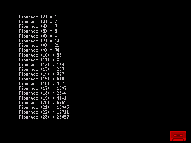
recovered_course_030_fibonacci_optimized · SSX
 recovered_course_040_fibonacci_large · SSX
recovered_course_040_fibonacci_large · SSX
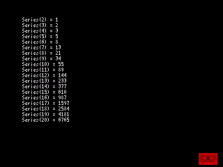
recovered_21_fibonacci_array · SSX
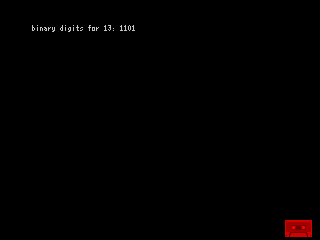
bases · SSX
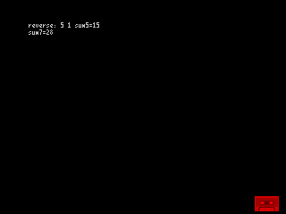
f77s_burkadj · SSX
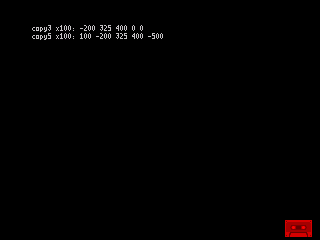
f77s_burkcopy · SSX
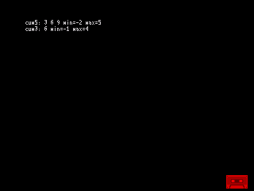
f77s_burkcum · SSX
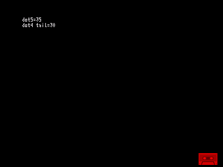
f77s_burkdot · SSX
f77s_burkflip · SSX
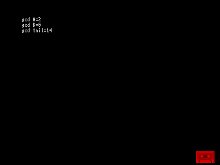
f77s_burkgcd · SSX
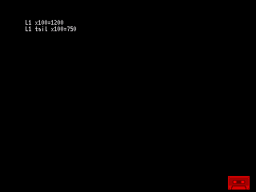
f77s_burkl1 · SSX
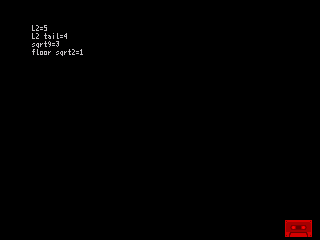
f77s_burkl2 · SSX
f77s_burkmean · SSX
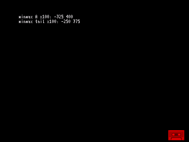
f77s_burkmin · SSX
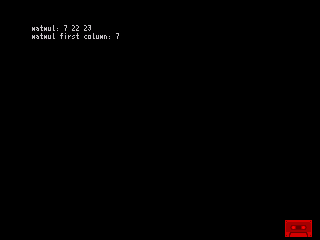
f77s_burkmm · SSX
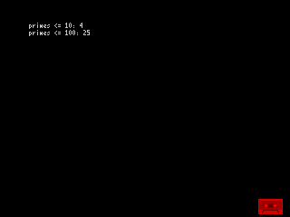
f77s_burkprime · SSX
f77s_burkreal · SSX
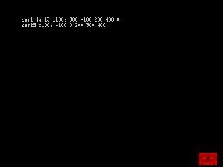
f77s_burkrsrt · SSX
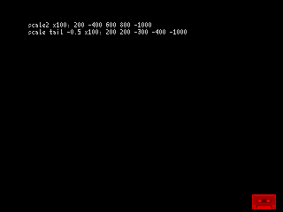
f77s_burkscale · SSX
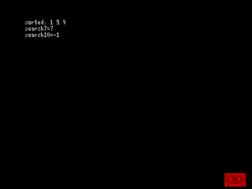
f77s_burksort · SSX
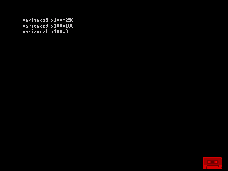
f77s_burkvar · SSX
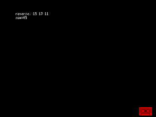
f77s_burkvec · SSX
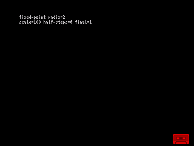
f77s_machar · SSX
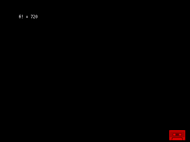
factorial · SSX
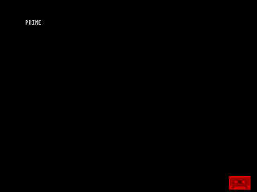
prime · SSX